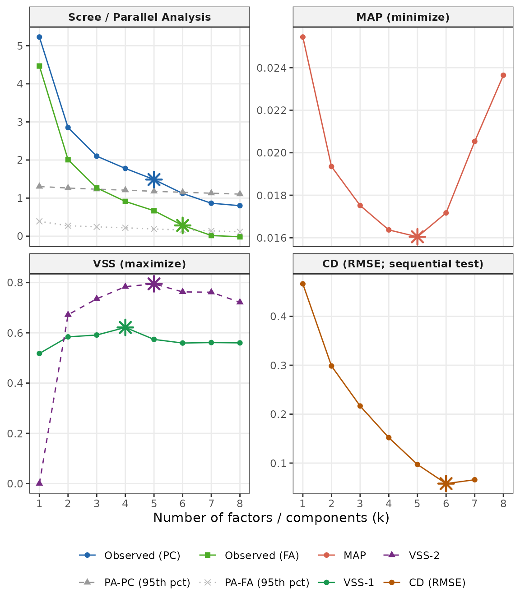
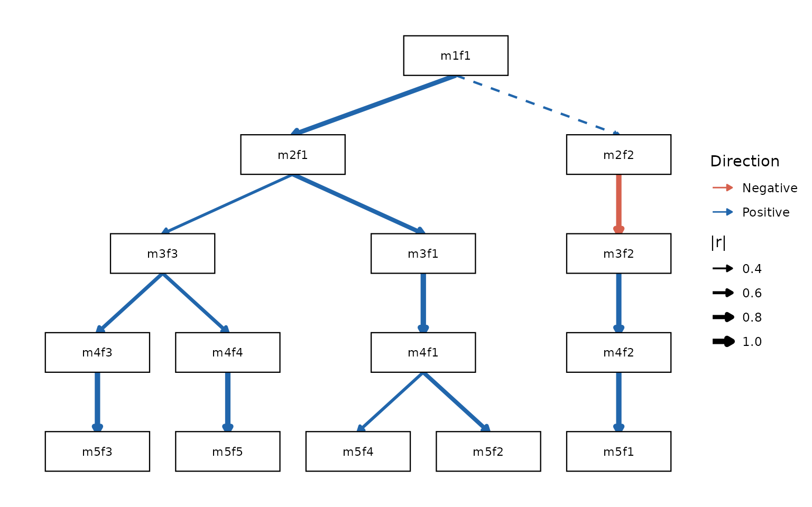

The problem: which factor solution is right?
Anyone who has applied factor analysis faces the same dilemma: how many factors should you extract? Parallel analysis might say 5; the scree plot might suggest 3; a reviewer might insist on 1. Each solution seems to describe the data differently, and it is tempting to treat them as competing answers to the same question.
Goldberg (2006) reframed this problem: the different solutions are not competing — they are complementary. A 1-factor solution captures the broadest shared variance in the data, the dimension along which all variables correlate. A 5-factor solution captures narrower, more specific dimensions. These two levels of resolution describe the same underlying structure from different vantage points, just as a satellite image and a street map describe the same city.
The bass-ackwards method makes this relationship explicit. It fits factor models at every level from 1 up to k, and then computes the correlations between factor scores across adjacent levels. Those correlations show you:
- Which narrow factor inherits from which broad factor — the lineage of each dimension as you move from coarse to fine resolution.
- Where a factor splits — a single broad factor that correlates strongly with two narrower factors is fragmenting into sub-dimensions.
- Where a factor is stable — a factor that correlates ~1.0 with its counterpart at the adjacent level is essentially the same construct appearing at two resolutions.
The result is a hierarchy map — a visual and numerical account of how the factor structure of your data builds from broad to narrow.
Note: This is a descriptive, data-driven hierarchy, not a confirmatory hierarchical model like Schmid–Leiman or higher-order SEM. The between-level correlations are score correlations (or their algebraic equivalents), not model parameters. See
vignette("engines")for when to use EFA or ESEM instead of PCA.
Data
We use bfi25, the built-in 25-item Big Five example
dataset. The items measure five personality traits — Agreeableness
(A1–A5), Conscientiousness (C1–C5), Extraversion (E1–E5), Neuroticism
(N1–N5), and Openness (O1–O5) — each on a 6-point Likert scale. See
?bfi25 for full provenance; the data derive from the SAPA
project using public-domain IPIP items.
We drop cases with any missing item. In a real analysis you might use
pairwise deletion or multiple imputation; na.omit() is
sufficient for this illustration.
Step 1: How many factors? suggest_k()
Before fitting the hierarchy, get a sense of the plausible range of
k. suggest_k() runs five complementary selection criteria
and reports a consensus range:
sk <- suggest_k(bfi, seed = 42)
#> ℹ Running parallel analysis (20 iterations, PC + FA)...
#> ✔ Running parallel analysis (20 iterations, PC + FA)... [312ms]
#>
#> ℹ Running MAP and VSS...
#> ✔ Running MAP and VSS... [174ms]
#>
#> ℹ Running Comparison Data (CD)...
#> ✔ Running Comparison Data (CD)... [9.8s]
#>
sk
#>
#> ── Factor / Component Count Suggestion (ackwards) ──────────────────────────────
#> Variables: 25
#> n: 875
#> Basis: pearson
#> Tested k: 1-8
#>
#> ── Criteria (k = 1-8) ──
#>
#> k = 1: PA-PC ✔ PA-FA ✔ MAP 0.0254 VSS-1 0.5178 VSS-2 0.0000 CD ✔
#> k = 2: PA-PC ✔ PA-FA ✔ MAP 0.0194 VSS-1 0.5839 VSS-2 0.6719 CD ✔
#> k = 3: PA-PC ✔ PA-FA ✔ MAP 0.0175 VSS-1 0.5913 VSS-2 0.7354 CD ✔
#> k = 4: PA-PC ✔ PA-FA ✔ MAP 0.0164 VSS-1 0.6215* VSS-2 0.7837 CD ✔
#> k = 5: PA-PC ✔ PA-FA ✔ MAP 0.0160* VSS-1 0.5738 VSS-2 0.7950* CD ✔
#> k = 6: PA-PC - PA-FA ✔ MAP 0.0172 VSS-1 0.5594 VSS-2 0.7629 CD ✔*
#> k = 7: PA-PC - PA-FA - MAP 0.0205 VSS-1 0.5613 VSS-2 0.7616 CD -
#> k = 8: PA-PC - PA-FA - MAP 0.0236 VSS-1 0.5600 VSS-2 0.7215 CD -
#>
#> ── Recommendations ──
#>
#> • PA-PC: k <= 5
#> • PA-FA: k <= 6
#> • MAP: k = 5
#> • VSS-1: k = 4
#> • VSS-2: k = 5
#> • CD: k = 6
#> Consensus range: k = 4-6
#> ────────────────────────────────────────────────────────────────────────────────
#> Note: k_max in ackwards() is a maximum depth. Setting k_max one or two levels
#> above the consensus to observe factor fragmentation is intentional.
#> Caution: PA-PC tends to overextract; structures may not replicate (Forbes,
#> 2023). PA-FA and CD are more conservative. Use the range.
autoplot(sk)
No single criterion is decisive — look at where they converge.
k_max in ackwards() is an upper
bound; setting k_max one or two levels above the
consensus to watch factors fragment is intentional and informative. For
a full explanation of each criterion, its bias direction, and how to
match it to your engine, see
vignette("ackwards-suggest-k").
Step 2: Fit the hierarchy ackwards()
Now fit the bass-ackwards hierarchy. The most important arguments are:
| Argument | What it controls | Default |
|---|---|---|
k_max |
Maximum depth of the hierarchy | (required) |
engine |
Extraction engine: "pca", "efa", or
"esem"
|
"pca" |
cor |
Correlation type: "pearson", "spearman",
"polychoric"
|
"pearson" |
Because BFI items are ordinal, we use
cor = "polychoric". This computes polychoric correlations
between items before factor extraction, giving a more accurate
representation of the latent structure.
x <- ackwards(bfi, k_max = 5, cor = "polychoric")No warning this time — specifying cor = "polychoric"
tells ackwards() that you have already thought about the
measurement scale.
Step 3: Summarize the result
High-level summary
print() gives a quick overview:
x
#>
#> ── Bass-Ackwards Analysis (ackwards) ───────────────────────────────────────────
#> Engine: pca
#> Rotation: varimax
#> Basis: polychoric
#> n: 875
#> k (max): 5
#>
#> ── Levels ──
#>
#> ✔ k = 1: 1 factor, 23.2% variance
#> ✔ k = 2: 2 factors, 35.5% variance
#> ✔ k = 3: 3 factors, 44.6% variance
#> ✔ k = 4: 4 factors, 52.2% variance
#> ✔ k = 5: 5 factors, 58.4% variance
#>
#> ── Edges ──
#>
#> 14 of 40 edges have |r| ≥ 0.3
#> ────────────────────────────────────────────────────────────────────────────────
#> Note: This is a series of linked solutions, not a fitted hierarchical model.
#> Cross-level edges are descriptive score correlations. Per-level fit indices
#> (EFA/ESEM) describe how well a k-factor model fits the items at that level --
#> they do not validate the edges or the hierarchy itself.The “Levels” section confirms that all five models converged, and reports the cumulative variance explained at each level. Notice that the jump from k = 1 to k = 2 is large (23.2% → 35.5%), while later jumps are smaller — characteristic of data with a strong general factor and several specific dimensions.
The “Edges” section reports how many of the 40 possible between-level connections exceed the display threshold of |r| ≥ 0.3. The 40 comes from summing across all adjacent pairs: 1×2 + 2×3 + 3×4 + 4×5 = 2 + 6 + 12 + 20 = 40.
summary() gives a more detailed view — per-factor
variance and fit indices at each level, plus a lineage list showing
which factors at each level descend from which parents:
summary(x)
#>
#> ── Summary: Bass-Ackwards Analysis (ackwards) ──────────────────────────────────
#> Engine: pca
#> Rotation: varimax
#> Basis: polychoric
#> n: 875
#> k (max): 5
#>
#> ── Levels ──
#>
#> k = 1: 1 factor (23.2% cumulative variance)
#> m1f1 23.21% eigenvalue 5.8
#> k = 2: 2 factors (35.5% cumulative variance)
#> m2f1 20.94% eigenvalue 5.8
#> m2f2 14.54% eigenvalue 3.07
#> k = 3: 3 factors (44.6% cumulative variance)
#> m3f1 18.04% eigenvalue 5.8
#> m3f2 13.89% eigenvalue 3.07
#> m3f3 12.66% eigenvalue 2.28
#> k = 4: 4 factors (52.2% cumulative variance)
#> m4f1 17.5% eigenvalue 5.8
#> m4f2 13.63% eigenvalue 3.07
#> m4f3 11.83% eigenvalue 2.28
#> m4f4 9.21% eigenvalue 1.9
#> k = 5: 5 factors (58.4% cumulative variance)
#> m5f1 13.75% eigenvalue 5.8
#> m5f2 13.56% eigenvalue 3.07
#> m5f3 11.9% eigenvalue 2.28
#> m5f4 10.09% eigenvalue 1.9
#> m5f5 9.12% eigenvalue 1.56
#>
#> ── Lineage (primary parents) ──
#>
#> m1f1 → m2f1, m2f2
#> m2f1 → m3f1, m3f3
#> m2f2 → m3f2
#> m3f1 → m4f1
#> m3f2 → m4f2
#> m3f3 → m4f3, m4f4
#> m4f1 → m5f1, m5f4
#> m4f2 → m5f2
#> m4f3 → m5f3
#> m4f4 → m5f5
#> ────────────────────────────────────────────────────────────────────────────────
#> Note: This is a series of linked solutions, not a fitted hierarchical model.
#> Cross-level edges are descriptive score correlations. Per-level fit indices
#> (EFA/ESEM) describe how well a k-factor model fits the items at that level --
#> they do not validate the edges or the hierarchy itself.glance() returns the same top-level information as a
one-row data frame, convenient for comparisons across models:
glance(x)
#> engine rotation cor k_max n_obs deepest_converged n_edges CFI TLI
#> 1 pca varimax polychoric 5 875 5 40 NA NA
#> RMSEA SRMR BIC
#> 1 NA NA NAStep 4: Visualize the hierarchy autoplot()
The hierarchy diagram is the centerpiece of the method. Each column represents one level (k = 1 on the left, k = 5 on the right). Arrows connect each factor to its primary parent — the factor at the level above with which it has the strongest correlation (|r|). Arrow thickness is proportional to |r|; color shows direction (blue = positive, orange = negative by default); solid arrows indicate strong connections (|r| ≥ 0.6), dashed arrows show moderate ones (|r| ≥ 0.3).
autoplot(x)
Reading this diagram from left to right tells the story of the Big Five:
- k = 1: One broad factor. Given the polychoric basis, this captures shared variance across all 25 items.
- k = 2: The broad factor splits into two: Neuroticism separates from a mixed cluster of Extraversion, Agreeableness, Conscientiousness, and Openness items (Extraversion items load most strongly within that cluster).
- k = 3: The non-Neuroticism cluster splits again, separating Extraversion/Agreeableness from Conscientiousness/Openness; Neuroticism stays intact and sheds its residual cross-loadings.
- k = 4: Conscientiousness and Openness differentiate into their own factors.
- k = 5: Extraversion and Agreeableness finally differentiate, completing the canonical Big Five.
The factors are labeled m{k}f{j} (level k, factor j).
These stable IDs are used throughout the object, so m5f1 at
k = 5 refers to the same factor in the loadings, the edge table, the
factor scores, and the diagram.
Adjusting the diagram
autoplot() accepts arguments to control edge thresholds,
colours, line styles, arrowheads, node labels, and more. See
vignette("ackwards-visualization") for a guided tour of all
options with rendered examples, or ?autoplot.ackwards for
the full argument list.
Step 5: Dig into the factors tidy()
tidy() extracts any component of the result as a tidy
data frame. The what argument controls what is
returned.
Reading each factor — top_items()
To understand what each factor represents, top_items()
lists the salient items (those with |loading| >= cut)
for every factor, grouped by level. This is more readable than a full
item-by-factor matrix, especially for deep hierarchies.
top_items(x, level = 5, cut = 0.3)
#>
#> ── Salient items by factor (ackwards) ──────────────────────────────────────────
#> Engine: pca
#> Cut: |loading| >= 0.3
#> Top-n: all
#>
#> ── Level 5 (5 factors) ──
#>
#> m5f1
#> E2 [-0.752]
#> E4 [0.747]
#> E1 [-0.701]
#> E3 [0.677]
#> E5 [0.597]
#> A5 [0.487]
#> A3 [0.415]
#> O3 [0.394]
#> N4 [-0.314]
#> O1 [0.302]
#> m5f2
#> N3 [0.825]
#> N1 [0.810]
#> N2 [0.805]
#> N5 [0.688]
#> N4 [0.646]
#> C5 [0.344]
#> O4 [0.317]
#> m5f3
#> C2 [0.735]
#> C4 [-0.716]
#> C1 [0.690]
#> C3 [0.679]
#> C5 [-0.652]
#> E5 [0.448]
#> A4 [0.345]
#> m5f4
#> A1 [-0.704]
#> A3 [0.703]
#> A2 [0.692]
#> A5 [0.580]
#> A4 [0.522]
#> m5f5
#> O5 [-0.705]
#> O3 [0.655]
#> O1 [0.604]
#> O2 [-0.595]
#> O4 [0.551]
#> ────────────────────────────────────────────────────────────────────────────────
#> Loadings reflect primary-parent sign alignment. Use tidy(x, what = "loadings")
#> for the full matrix.Reading a hierarchy of factors and giving them names is its own topic
— including the sign convention, naming across levels, and applying
labels to the diagram. See vignette("ackwards-interpret")
for the full workflow.
Factor loadings (tidy)
For programmatic access, tidy(what = "loadings") returns
the full loading matrix in long format — one row per item × factor ×
level:
loadings_df <- tidy(x, what = "loadings")
head(loadings_df)
#> level factor item loading se ci_lower ci_upper
#> 1 1 m1f1 A1 -0.3440908 NA NA NA
#> 2 1 m1f1 A2 0.5977210 NA NA NA
#> 3 1 m1f1 A3 0.6511387 NA NA NA
#> 4 1 m1f1 A4 0.4837850 NA NA NA
#> 5 1 m1f1 A5 0.6848262 NA NA NA
#> 6 1 m1f1 C1 0.4502778 NA NA NABetween-level edges
Each edge is the between-level factor-score correlation computed via Waller’s (2007) closed-form W′RW algebra — an exact result that requires no score materialization, just the weight matrices and the input correlation matrix.
# Each factor's primary-parent edge, strongest first
tidy(x, what = "edges", primary_only = TRUE, sort = "strength")
#> from to level_from level_to r is_primary above_cut
#> 1 m4f2 m5f2 4 5 0.9984791 TRUE TRUE
#> 2 m3f1 m4f1 3 4 0.9938371 TRUE TRUE
#> 3 m4f4 m5f5 4 5 0.9894063 TRUE TRUE
#> 4 m2f2 m3f2 2 3 -0.9873651 TRUE TRUE
#> 5 m4f3 m5f3 4 5 0.9824895 TRUE TRUE
#> 6 m3f2 m4f2 3 4 0.9761484 TRUE TRUE
#> 7 m1f1 m2f1 1 2 0.8900522 TRUE TRUE
#> 8 m2f1 m3f1 2 3 0.8740850 TRUE TRUE
#> 9 m4f1 m5f1 4 5 0.8377659 TRUE TRUE
#> 10 m3f3 m4f3 3 4 0.7316162 TRUE TRUE
#> 11 m3f3 m4f4 3 4 0.6802343 TRUE TRUE
#> 12 m4f1 m5f4 4 5 0.5458269 TRUE TRUE
#> 13 m2f1 m3f3 2 3 0.4814452 TRUE TRUE
#> 14 m1f1 m2f2 1 2 0.4558587 TRUE TRUEprimary_only = TRUE keeps just the strongest-connecting
edge for each factor — its primary parent — and
sort = "strength" orders them by |r|. The r
values close to 1.0 indicate factors that are nearly identical across
adjacent levels — a sign of a stable, replicable dimension. Smaller
values indicate where the structure is reorganizing.
Variance explained
tidy(x, what = "variance")
#> level factor proportion cumulative
#> 1 1 m1f1 0.23211212 0.2321121
#> 2 2 m2f1 0.20937655 0.2093766
#> 3 2 m2f2 0.14544064 0.3548172
#> 4 3 m3f1 0.18038118 0.1803812
#> 5 3 m3f2 0.13889810 0.3192793
#> 6 3 m3f3 0.12655466 0.4458339
#> 7 4 m4f1 0.17500851 0.1750085
#> 8 4 m4f2 0.13632849 0.3113370
#> 9 4 m4f3 0.11825358 0.4295906
#> 10 4 m4f4 0.09208697 0.5216775
#> 11 5 m5f1 0.13753091 0.1375309
#> 12 5 m5f2 0.13556865 0.2730996
#> 13 5 m5f3 0.11899787 0.3920974
#> 14 5 m5f4 0.10086586 0.4929633
#> 15 5 m5f5 0.09121399 0.5841773Each row is one factor at one level. proportion is the
fraction (0-1) of total item variance explained by that factor;
cumulative accumulates within a level. Multiply by 100 for
a percentage.
Step 6: Score observations augment()
Factor scores place every observation on each factor at every level. They are useful for regression, clustering, or any downstream analysis where you want a continuous summary of a latent dimension.
augment(x, data = bfi) computes scores on the fly from
the stored weight matrices and appends them to your data frame. The
score columns are named .m{k}f{j} to distinguish them from
the original variables.
scored <- augment(x, data = bfi)
#> Warning: ! Factor scores are standardized using model-implied SDs from a "polychoric"
#> correlation matrix.
#> ℹ The raw projection uses `.standardize(data)` (Pearson z-scores), but
#> `score_var` comes from the "polychoric" R.
#> ℹ Empirical score SDs will differ from 1.0. For non-Pearson analyses,
#> between-level edges from `tidy()` are the authoritative associations.
#> This warning is displayed once per session.
dim(scored) # 25 original items + 15 score columns (1+2+3+4+5)
#> [1] 875 40
names(scored)[26:40]
#> [1] ".m1f1" ".m2f1" ".m2f2" ".m3f1" ".m3f2" ".m3f3" ".m4f1" ".m4f2" ".m4f3"
#> [10] ".m4f4" ".m5f1" ".m5f2" ".m5f3" ".m5f4" ".m5f5"Scores are standardized so that the model-implied
variance is 1 — meaning the scaling comes from the polychoric
correlation matrix, not from the raw data. In practice the empirical
standard deviations will be close to but not exactly 1 when a
non-Pearson basis is used; see ?augment.ackwards for
details. For pure PCA on Pearson correlations the model-implied and
empirical variances agree exactly.
If you need scores repeatedly (e.g., in a cross-validation loop),
store them at fit time with keep_scores = TRUE to avoid
re-applying the weight matrices on every call:
x2 <- ackwards(bfi, k_max = 5, cor = "polychoric", keep_scores = TRUE)
scored2 <- augment(x2) # uses stored matrices — no recomputation
all.equal(scored2$.m5f1, scored$.m5f1)
#> [1] TRUEUsing scores for downstream analysis
Because augment() returns a plain data frame, the scores
slot directly into any standard R workflow. As a quick illustration, the
k = 5 factor scores should be nearly uncorrelated with each other — a
consequence of orthogonal rotation — while scores across levels should
be highly correlated along the primary-parent lineage:
# Within-level correlations at k = 5: should be near zero (orthogonal rotation)
k5 <- scored[, c(".m5f1", ".m5f2", ".m5f3", ".m5f4", ".m5f5")]
round(cor(k5), 2)
#> .m5f1 .m5f2 .m5f3 .m5f4 .m5f5
#> .m5f1 1.00 0.01 -0.01 -0.02 0.00
#> .m5f2 0.01 1.00 0.01 -0.01 -0.01
#> .m5f3 -0.01 0.01 1.00 -0.02 -0.02
#> .m5f4 -0.02 -0.01 -0.02 1.00 -0.03
#> .m5f5 0.00 -0.01 -0.02 -0.03 1.00
# Cross-level: m4f1 is the primary parent of m5f1 and m5f4 (from the edge table)
lineage <- scored[, c(".m4f1", ".m5f1", ".m5f2", ".m5f4")]
round(cor(lineage), 2)
#> .m4f1 .m5f1 .m5f2 .m5f4
#> .m4f1 1.00 0.84 0.00 0.53
#> .m5f1 0.84 1.00 0.01 -0.02
#> .m5f2 0.00 0.01 1.00 -0.01
#> .m5f4 0.53 -0.02 -0.01 1.00The cross-level block confirms lineage: .m4f1 correlates
strongly with .m5f1 and .m5f4 (the k = 5
factors it spawned) and near-zero with .m5f2 (which
descends from a different k = 4 factor). This is a sanity check you can
run on any result — strong parent–child correlations should appear
exactly where the tidy(what = "edges") table says they
should.
Summary
The bass-ackwards workflow in ackwards has six steps:
-
suggest_k(data)— identify a plausible range for the hierarchy depth. -
ackwards(data, k_max, cor = ...)— fit the full hierarchy of factor models. -
print(x)/summary(x)/glance(x)— check convergence, read the per-level variance and fit indices, and inspect the lineage list. -
autoplot(x)— visualize the hierarchy as a lineage diagram. -
tidy(x, what = ...)— extract loadings, edges, or variance in a form ready for tables or further analysis. -
augment(x, data = ...)— generate factor scores for downstream use.
Next steps
| Topic | Vignette |
|---|---|
| Choosing k: the five criteria in depth, pros/cons, and best practices | vignette("ackwards-suggest-k") |
| When PCA is not enough: comparing EFA and ESEM engines | vignette("ackwards-engines") |
| Ordinal data: polychoric correlations and WLSMV estimation | vignette("ackwards-ordinal") |
| Skip-level connections and pruning with the Forbes extension | vignette("ackwards-forbes") |
| Customizing the hierarchy diagram | vignette("ackwards-visualization") |
References
Goldberg, L. R. (2006). Doing it all bass-ackwards: The development of hierarchical factor structures from the top down. Journal of Research in Personality, 40(4), 347–358. https://doi.org/10.1016/j.jrp.2006.01.001
Waller, N. G. (2007). A general method for computing hierarchical component structures by Bass-Ackward factor analysis. Journal of Research in Personality, 41(4), 745–752. https://doi.org/10.1016/j.jrp.2006.08.005
Horn, J. L. (1965). A rationale and test for the number of factors in factor analysis. Psychometrika, 30(2), 179–185.
Velicer, W. F. (1976). Determining the number of components from the matrix of partial correlations. Psychometrika, 41(3), 321–327.